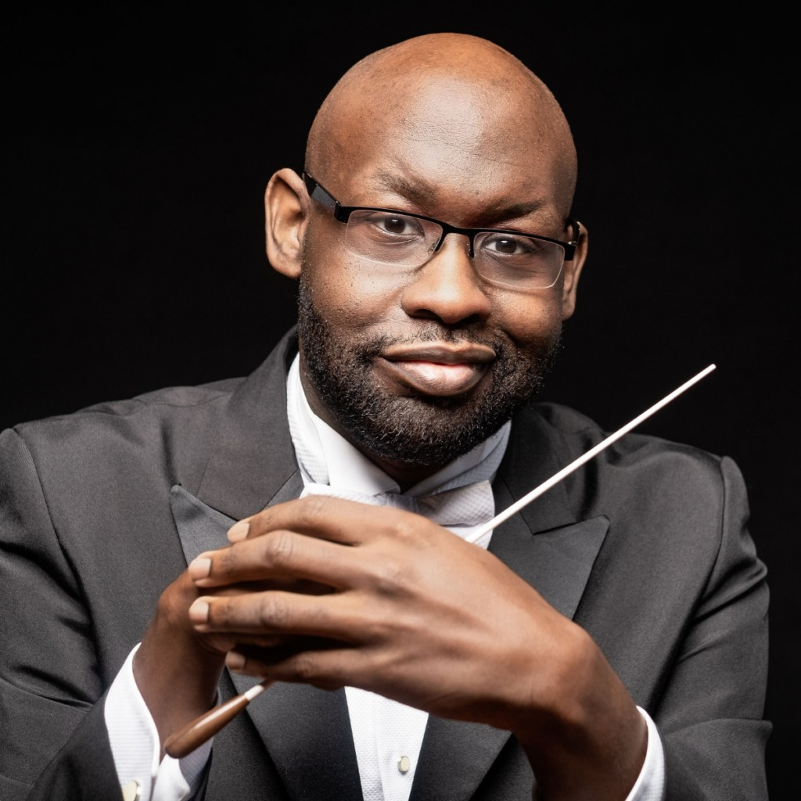
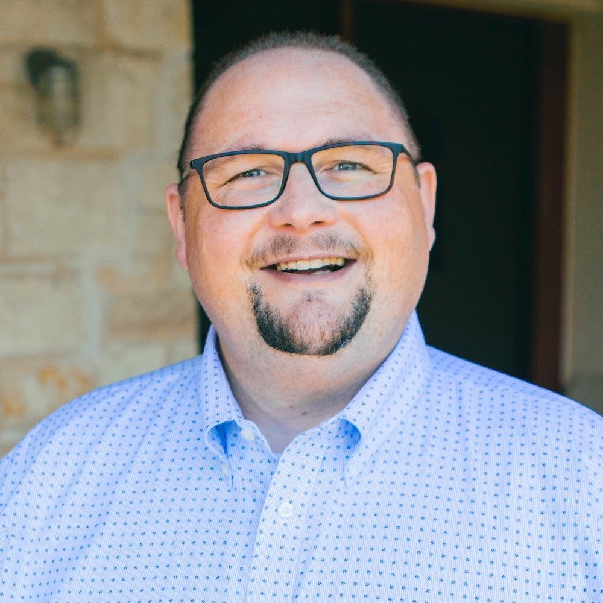

Leadership
The Dallas Children’s Chorus’s artistic and administrative leadership guide every rehearsal, performance, and season — the same team behind the Dallas Symphony Children’s Chorus.
Ellie Lin
Ms. Lin trained in choral conducting at the Eastman School of Music, and has led choirs in performances across Europe, Asia, and South America, including at Vienna’s Musikverein.
BM, Eastman School of Music
Faculty, Texas Music Conservatory
Artistic Director, The Echo Singers
Ms. Lin is the Artistic Director of the Dallas Symphony Children’s Chorus (DSCC). In addition, she is also Artistic Director/Conductor of the Great Land Choral Society, a faculty member at Texas Music Conservatory, and Artistic Director of The Echo Singers.
At the DSCC, Ms. Lin oversees its artistic and administrative staff, and leads its choruses for performances in standalone concerts, community appearances, concert tours, and participations in Dallas Symphony Orchestra concerts.
Through the years, Ms. Lin’s choirs have concertized in Austria, Germany, China, Taiwan, Argentina, Canada, and in almost every state in the United States, often at prestigious concert halls such as the National Centre for the Performing Arts in Beijing and Vienna’s Musikverein Golden Hall.
With the world-renowned Texas Boys Choir (TBC), she served as its Interim Artistic Director, Associate Artistic Director, Conductor, Pianist, and Algebra teacher at various times since 1991. With Texas Boys Choir, Ms. Lin has performed before US Presidents, in several CD recordings, and on national radio stations and TV programs. Furthermore, while Ms. Lin was Associate Artistic Director and Pianist, TBC was invited to perform at the National American Choral Directors Association (ACDA) Conference in 2013 and 2017.
In 2017, Ms. Lin was nominated on the preliminary ballot for the 60th Grammy Award for Producer of the Year, along with the Texas Boys Choir’s 70th Year CD for the Album of the Year and Best Choral Performance awards.
Other positions held include High School Choir Director of High Point Academy in Fort Worth, Director of the Academy Chorale at Fort Worth Academy of Fine Arts, Conductor of Pinnacle Choristers, Director of Southwest Christian School High School Choir, Artistic Director/Conductor of Good Earth Singers, Choir Director at Arlington Chinese Church, and Piano Instructor at University of Charleston in West Virginia.
Born in Taiwan, Ms. Lin grew up in Pleasantville, New York. She studied Choral Conducting with Donald Neuen at the Eastman School of Music, where she received both her Bachelor’s and Master’s degrees in Music Education and Choral Conducting, with a concentration in piano.
In addition to conducting, Ms. Lin is in demand as a piano teacher, collaborative pianist, and choral clinician. She also enjoys her work as a certified Chinese interpreter and translator. Her professional affiliations include the American Choral Directors Association (ACDA), Texas Music Educators Association (TMEA), Texas Choral Directors Association (TCDA), and National Music Teachers Association (NMTA).
Paula Olsen
Ms. Olsen has spent more than twenty years as a choral director, leading choirs to top honors at contests and festivals, and has performed with ensembles including the San Antonio Vocal Arts Ensemble and the Choral Arts Society of Philadelphia.
BM, Texas Tech University
Ms. Olsen is the Artistic Manager of the Dallas Symphony Children’s Chorus (DSCC). She grew up in Texas and earned both her Bachelor of Music Education degree and Master of Music degree with an emphasis in Choral Conducting from Texas Tech University. She has over twenty years of experience as a choral director with her choirs consistently earning top honors at contests and festivals. Ms. Olsen has enjoyed being a member of the San Antonio Vocal Arts Ensemble, Choral Arts Society of Philadelphia, and the Ken Davis Chorale, as well as performing as a soloist.
Ms. Olsen brings significant experience and depth to the DSCC team, helping ensure a strong musical experience for DSCC choristers.
Emma Jensen
Ms. Jensen brings a background in arts administration and private music instruction to the Dallas Children’s Chorus’s day-to-day operations.
Ms. Jensen is the Operations Manager of the Dallas Symphony Children’s Chorus (DSCC). She received her Bachelor’s of Music in Horn Performance from the Lawrence University Conservatory of Music in Appleton, Wisconsin, and attended Southern Methodist University for graduate school. Ms. Jensen worked in education as a private horn lesson teacher and assisted with academic accommodations in schools. Her hobbies include traveling and spending time with family and friends.
Brittany Haywood
Ms. Haywood has spent over a decade as a choral educator, leading choirs to UIL sweepstakes honors and a featured performance at the Texas Music Educators Association convention.
Ms. Haywood is the Training Choir Director and Symphonic Voices Assistant Director of the Dallas Symphony Children’s Chorus (DSCC). She is a highly experienced choral music educator and currently is also the Assistant Choir Director at Southwest High School. Prior to her position at Southwest, Ms. Haywood was Associate Choir Director at Alvarado High School.
During the 2023–24 school year, the Alvarado Varsity Mixed Choir was proud to be featured at the Texas Music Educators Association (TMEA), working with choral composer Nick Page. While at Alvarado, Ms. Haywood’s choirs have consistently earned sweepstakes trophies at University Interscholastic League (UIL). She also co-directed the Alvarado Intermediate School Honor Choir of select fourth and fifth grade students to provide them with an introduction to singing with good vocal technique in a choral setting.
For the past ten years as a collaborative pianist, Ms. Haywood has played for TMEA Region concerts, UIL concert and solo contests, as well as many school concerts. She also enjoys playing piano at her church, First Presbyterian Church in Duncanville, Texas.
Ms. Haywood earned a Bachelor of Music Education degree from Baylor University in 2012 and has begun graduate work in music education at VanderCook College of Music. She is married to Joseph Haywood and loves spending time with their dogs, Cocoa and Brownie Pearl.
Hans Grim
Mr. Grim serves as Visiting College Faculty for Collaborative Piano in the Department of Theatre at Abilene Christian University and has taught and conducted at institutions across North Texas, including TCU.
BA, Texas Wesleyan University
Mr. Grim is the Symphonic Voices Assistant Director of the Dallas Symphony Children’s Chorus (DSCC) and is a versatile musician and educator based in the DFW area. He holds a Master of Music Education from Tarleton State University and a Bachelor of Arts in Vocal Music from Texas Wesleyan University. With a diverse background as a choral conductor, vocalist, and collaborative pianist, Mr. Grim has extensive experience teaching and directing in various educational and professional settings.
Currently serving as Visiting College Faculty for Collaborative Piano in the Department of Theatre at Abilene Christian University, Mr. Grim was previously the Head Choir Director at Alvarado High School. He has also worked at Texas Christian University and a number of other educational institutions. Mr. Grim has been involved in directing, conducting, and accompanying ensembles and musical theatre productions.
In addition to his educational roles, Mr. Grim has a rich background in church music, having served as the music director and accompanist at numerous churches. His contributions also include founding and directing multiple music programs and leading tours and performances both domestically and internationally. Mr. Grim continues to influence and inspire through his dedication to music education and performance.

Victor Johnson
Mr. Johnson is a widely performed composer and arranger with more than 350 published choral works, and an active guest conductor and clinician nationally.
Mr. Johnson is the Mixed Ensemble Director of the Dallas Symphony Children’s Chorus (DSCC). A native of Dallas, he is the School Choral Editor for Sing!, the educational publishing division of Choristers Guild. A prolific composer and arranger, Mr. Johnson has over 350 choral works, vocal solo books, and keyboard collections currently in print.
Prior to his position at Choristers Guild, from 2000–2018, Mr. Johnson was a choral director at Ft. Worth Academy of Fine Arts (FWAFA). At FWAFA, he directed the Academy Singers, Academy Men’s Choir, and was Artistic Director of the Singing Girls of Texas and Children’s Choir of Texas.
Mr. Johnson is in demand as a guest conductor, adjudicator, and clinician for music educators and students throughout the US. He has conducted All-State and Regional Honor choirs in the US and Canada. Mr. Johnson’s own choirs have performed at the Texas Music Educators Association Convention in 2011 and 2014, as well as the American Choral Directors Association–Southwest Division conference in March 2016.
Mr. Johnson’s professional affiliations include the American Choral Directors Association, Texas Music Educators Association, National Association for Music Education, Texas Choral Directors Association, ASCAP, and Phi Mu Alpha Sinfonia, Inc.

Cory Curvin
Mr. Curvin is a Fort Worth–based choral director and collaborative pianist with more than three decades of performance experience across North Texas.
BM, University of Southern Mississippi
AA, Jones College
Mr. Curvin is Mixed Ensemble Assistant Director at the Dallas Symphony Children’s Chorus (DSCC). His public performance premiere was at the age of six, and his piano rendition of “I’m A Little Teapot” was complete with choreography. A native of Mississippi, Mr. Curvin was a music educator and choral conductor in North Texas for over a decade before beginning his work as Education Director with Choristers Guild, a music publisher based in Dallas. In addition to his role with the Guild, he arranges music for choir, piano, instrumental ensembles, and handbells.
Mr. Curvin works within the music ministry of his church and enjoys road trips, the autumnal holidays, winter sports, and collecting Texas historical memorabilia.
Ready to see if the DCC is right for your family?
Attend an audition, tour a rehearsal, or simply reach out with questions — we’d love to meet you.